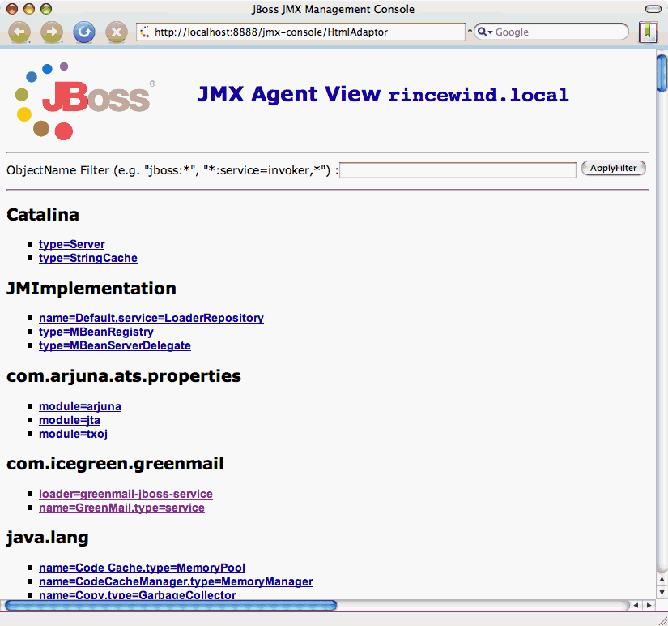

Latest Release GreenMail v1.3.1b - May 27th, 2009
Latest Release GreenMail v1.3.1b - May 27th, 2009
Latest Release GreenMail v1.3.1b - May 27th, 2009
Latest Release GreenMail v1.3.1b - May 27th, 2009
GreenMail JBoss ServiceGreenMail provides a JBoss Service for easy JBoss integration. The usage szenario is a development or test environment where a real mail server is too much overhead. With the GreenMail mail service each developer has its own local mail server sandbox - so there's no danger for accidentally leaking test mails into the Internet.
Deploy the service
...
[exec] 01:03:08,387 INFO [Server] Starting JBoss (MX MicroKernel)...
[exec] 01:03:08,388 INFO [Server] Release ID: JBoss [Zion] 4.0.5.GA (build: CVSTag=Branch_4_0 date=200610162339)
[exec] 01:03:08,394 INFO [Server] Home Dir: /Users/mm/devel/example-project/target/jboss
[exec] 01:03:08,394 INFO [Server] Home URL: file:/Users/mm/devel/example-project/target/jboss/
[exec] 01:03:08,395 INFO [Server] Patch URL: null
[exec] 01:03:08,395 INFO [Server] Server Name: example-project
[exec] 01:03:08,395 INFO [Server] Server Home Dir: /Users/mm/devel/example-project/target/jboss/server/example-project
[exec] 01:03:08,395 INFO [Server] Server Home URL: file:/Users/mm/devel/example-project/target/jboss/server/example-project/
[exec] 01:03:08,395 INFO [Server] Server Log Dir: /Users/mm/devel/example-project/target/jboss/server/example-project/log
[exec] 01:03:08,395 INFO [Server] Server Temp Dir: /Users/mm/devel/example-project/target/jboss/server/example-project/tmp
[exec] 01:03:08,396 INFO [Server] Root Deployment Filename: jboss-service.xml
[exec] 01:03:08,618 INFO [ServerInfo] Java version: 1.5.0_07,Apple Computer, Inc.
[exec] 01:03:08,618 INFO [ServerInfo] Java VM: Java HotSpot(TM) Client VM 1.5.0_07-87,"Apple Computer, Inc."
[exec] 01:03:08,618 INFO [ServerInfo] OS-System: Mac OS X 10.4.9,i386
[exec] 01:03:08,908 INFO [Server] Core system initialized
[exec] 01:03:10,136 INFO [WebService] Using RMI server codebase: http://noname:8083/
[exec] 01:03:10,153 INFO [Log4jService$URLWatchTimerTask] Configuring from URL: resource:log4j.xml
[exec] 01:03:11,572 INFO [GreenMailService] Starting greenmail service ( host=127.0.0.1, smtp:3025 pop3:3110 imap:3143 )
...
 You find two entries, of which the second one holds our interest:
Configuring the serviceThe GreenMail service is configured by the file META-INF/jboss-service.xml in the exploded service directory.
<?xml version="1.0" encoding="UTF-8"?>
<!DOCTYPE server>
<server>
<!-- Prevent JBoss classloader issues by configuring an extra classloader -->
<loader-repository>
com.icegreen.greenmail:loader=greenmail-jboss-service
</loader-repository>
<!-- The GreenMail service configration -->
<mbean code="com.icegreen.greenmail.jboss.GreenMailService"
name="com.icegreen.greenmail:type=service,name=GreenMail">
<!-- Some mail users - format is USER:PWD@HOST -->
<attribute name="Users">
test1:pwd1@localhost
test2:pwd2@localhost
</attribute>
<!-- Port offset for services. Default is 3000, so eg SMTP will be 3000+25 = 3025 . -->
<attribute name="PortOffset">
3000
</attribute>
</mbean>
</server>
Send a message via JMX
Send a message with your mail clientYou can use your favorite mail client if you configure it for GreenMail by setting the outgoing mail to the GreenMail SMTP port. By default this is localhost:3025. Of course you can also read created mail by configuring your mail client to use GreenMail POP3 (localhost:3110) or IMAP (localhost:3143). You will probably have to adjust these settings for your specific configuration.List emails for a user via JMXInstead of using your favourite mail client, you can use the JMX GreenMail service for listing all current mails in of a user in the GreenMail server sandbox.
Have fun! We welcome any feedback. |